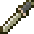

| IMG | NOME | DESCRIÇÃO | ATK/DEF | ONDE CONSEGUIR |
|---|---|---|---|---|
| Basilard | Espada curta basica | +1 / 0 | Alchemy Lab; Bloody Zombie |
|
| Stone Sword | Pode petrificar inimigos | +1 / 0 | Gorgon | |
| Short Sword | espada curda comum | +2 / 0 | Bone Scimitar | |
| Holbein Dagger | Ataque diagonal super rápido | +6 / 0 | Lesser Demon | |
| Rapier | Espada de lâmina grande | +7 / 0 | Armor Lord; Dhuron |
|
| Jewel Sword | Transforma inimigos em jóias | +15 / 0 | Entrance; Discus Lord |
|
| Werebane | Efetivo contra monstros hibridos | +18 / 0 | Hunting Girl | |
| Shotel | Uma foice curta | +20 / 0 | Reverse Outer Wall; Blade Soldier |
|
| Combat Knife | Bastante poderosa, melhor espada curta | +24 / 0 | Abandoned Mine; Gurkha |
| IMG | NOME | DESCRIÇÃO | ATK/DEF | ONDE CONSEGUIR |
|---|---|---|---|---|
| Tyrfing | Serve para diminuir seu poder | -30 / 0 | Castle Keep | |
| Alucart Sword | Alucard Sword falsificada | +2 / 0 | Marble Gallery | |
|  | Gladius | Espada de gladiador | +3 / 0 | Outer Wall |
| Scimitar | Espada arabe | +5 / 0 | Undergrounds Caverns; Skull Lord |
|
| Cutlass | Arma da marinha britânica | +7 / 0 | Sword Lord; Corner Guard; Owl Knight |
|
| Saber | Sabre comum, usado pela cavalaria | +9 / 0 | Armor lord; Magic tome |
|
| Falchion | Espada curva | +10 / 0 | Castle Keep | |
| Broadsword | Espada longa, mas comum | +12 / 0 | Olrox Quarters; Spectral Sword |
|
| Bekatowa | Boa espada, leve | +14 / 0 | Clock Tower; Sword Lord |
|
| Damascus Sword | Espada com lâmina bem afiada | +17 / 0 | Corner Guard | |
| Bastard Sword | Espada bastarda com bom poder de ataque | +20 / 0 | Reverse Keep; Spectral Sword |
|
| Hunter Sword | Espada de caça | +20 / 0 | Blade | |
| Talwar | Espada curva | +22 / 0 | Anti-Chapel | |
| Sword of Hador | Arma de poder razoável | +24 / 0 | Death Wing's Lair | |
| Mormegil | Espada mágica da escuridão | +25 / 0 | Catacombs | |
| Icebrand | Espada mágica de gelo | +25 / 0 | Catacombs; Fish head |
|
| Firebrand | Espada mágica de fogo | +25 / 0 | Lossoth | |
| Thunderbrand | Espada mágica de eletricidade | +25 / 0 | Library Shop | |
| Vorpal Blade | Poderosa e rapida | +25 / 0 | Archer | |
| Gurthang | Aumenta seu poder com o sangue | +25 / 0 | Spectral Sword | |
| Holysword | Espada mágica da luz | +26 / 0 | Colosseum; Vandal Sword |
|
| Luminus | Forjada por Elfos | +26 / 0 | Reverse Clock Tower | |
| Harper | Boa espada | +28 / 0 | Library Shop | |
| Gram | Espada nórdica | +30 / 0 | Reverse Colosseum | |
| Terminus Est | Tem o poder de envenenamento | +32 / 0 | Nova Skeleton | |
| Marsil | Espada mágica de fogo aprimorada | +33 / 0 | Fire Demon | |
| Crisseagrim | Rápida e letal, a melhor espada | +35 / 0 | Schmoo | |
| Dark Blade | Forjada por Elfos | +35 / 0 | Reverse Caverns | |
| Mourneblade | Recupera 8 HP a cada golpe que atinge | +36 / 0 | Azhagal | |
| Mablung | Mesmo efeito do Shield Rod | +39 / 0 | Spectral Sword | |
| Alucard Sword | A espada herdada por Alucard | +42 / 0 | Rerverse Mines | |
| Badelaire | A cada hora de jogo ela ganha +1 de ATK | +?? / 0 | Forbidden Library |
| IMG | NOME | DESCRIÇÃO | ATK/DEF | ONDE CONSEGUIR |
|---|---|---|---|---|
| Muramasa | Recupera energia com sangue | -5 / 0 | Vandal Sword; Scarecrow |
|
| Nakamura | Espada mal forjada | -5 / 0 | Blade Soldier | |
| Red Rust Sword | Causa Curse nos oponentes | -2 / 0 | Bone Scimitar | |
| Takemitsu | Espada de bambu | +1 / 0 | Spectral Sword; Flea Man |
|
| Nunchaku | Ao melhor estilo oriental | +10 / 0 | Underground Caverns | |
| Claymore | Espada longa escocesa | +26 / 0 | Underground caverns; Valhalla Knight |
|
| Sword of Dawn | Invoca os Dawn Warriors | +27 / 0 | Reverse Keep | |
| Flamberge | Lembra chamas de fogo | +31 / 0 | Cloaked Knight | |
| Katana | A clássica katana japonesa | +32 / 0 | Necromancy Lab; Tombstone |
|
| Greatsword | Espada Larga | +35 / 0 | Guardian | |
| Zweihander | Espada larga alemã | +38 / 0 | Blue Venus Weed | |
| Estoc | Usada para estocar oponentes | +39 / 0 | Valhalla Knights | |
| Obsidian Sword | Poder da escuridão | +41 / 0 | Lesser Demon | |
| Osafune Katana | Katana poderosa | +50 / 0 | Reverse Caverns | |
| Yasutsuna | Rapida e letal, otima espada | +60 / 0 | Werewolf | |
| Masamune | Katana com poder fenomenal | +68 / 0 | Black Panter |
| IMG | NOME | DESCRIÇÃO | ATK/DEF | ONDE CONSEGUIR |
|---|---|---|---|---|
| Knucke Duster | Soco inglês | +1 / 0 | Underground Caverns; Frog |
|
| Blue Knuckles | Faz uppercuts | +8 / 0 | Toad | |
| Jewel Knuckles | Causa bastante crítico | +21 / 0 | Outer Wall; Rock Knight |
|
| Iron Fist | Golpes de Karate | +26 / 0 | Werewolf | |
| Fist of Tulkas | Aparentemente vindo da Terra-média | +38 / 0 | Lion |
| IMG | NOME | DESCRIÇÃO | ATK/DEF | ONDE CONSEGUIR |
|---|---|---|---|---|
| Mace | Maça de metal comum | +9 / 0 | Library Shop | |
| Morning Star | Maça estrelada | +11 / 0 | Royal Chapel; Flail Guard |
|
| Holy Rod | Poder sagrado | +12 / 0 | Long Library | |
| Star Flail | Lembra três estrelas | +15 / 0 | Clock Tower | |
| Shield Rod | Realiza magias em conjunto com escudos | +11 / 0 | Colosseum | |
| Moon Rod | Poder Lunar | +17 / 0 | Reverse Clock Tower |
| IMG | NOME | DESCRIÇÃO | ATK/DEF | ONDE CONSEGUIR |
|---|---|---|---|---|
| Chakram | Anel de arremesso | +15 / 0 | Discus Lord | |
| Heaven Sword | Espada flutuante(sagrada) | +21 / 0 | Cloaked Knight | |
| Runesword | A runa diz: Verbutten(Proibído) | +40 / 0 | Dodo Bird |